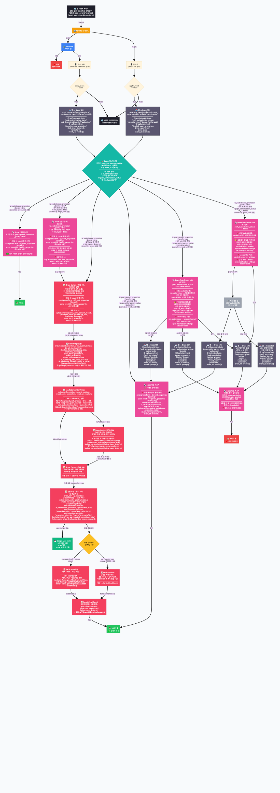
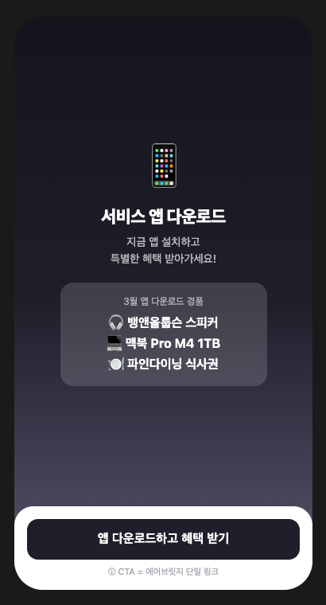
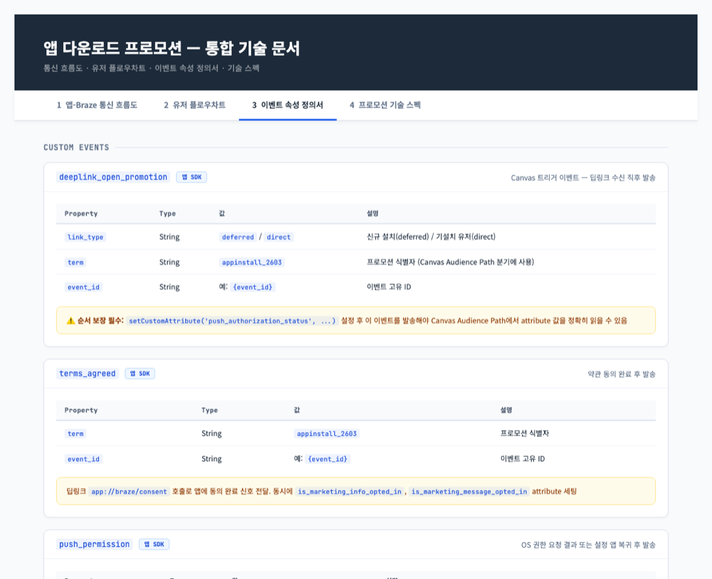
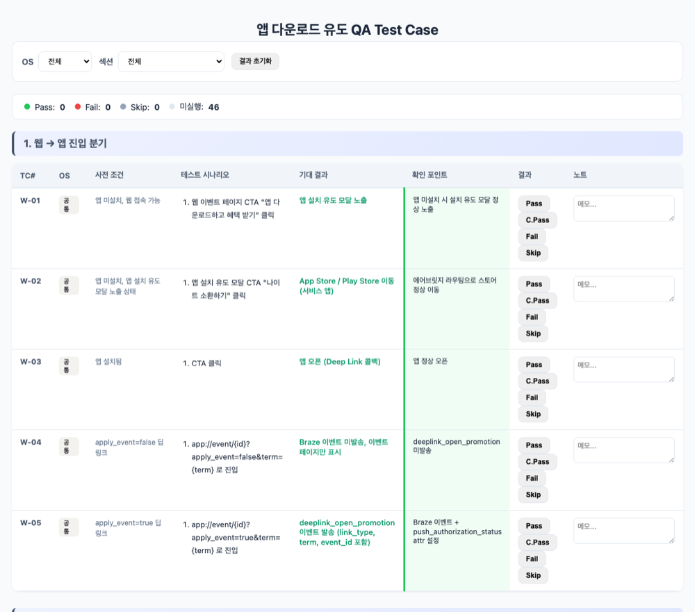

구현 · Braze CRM
앱 다운로드를 이벤트 참여 경험으로:
Braze Custom HTML IAM 실전 기록
비개발자 마케터가 캠페인을 작은 제품처럼 보고 — 필요한 상태값·이벤트·분기·운영 화면을 먼저 설계한 뒤 — Braze 기능 안에서 구현 가능한 범위를 찾아낸 기록. 앱 다운로드를 “요구사항”이 아니라 “참여 방법”으로 바꾼 이야기.
들어가기 전에
개발자의 구현기가 아니라, 마케터의 설계 기록
이 글은 개발자가 쓴 프론트엔드 구현기가 아니다. 비개발자인 마케터가 Braze라는 마케팅 툴 안에서 어디까지 캠페인 경험을 설계할 수 있고, 어떤 지점에서 개발 스펙을 줄일 수 있었는지 정리한 기록이다.
처음부터 코드를 잘 쓰는 것이 목표는 아니었다. 목표는 앱 다운로드라는 무거운 행동을 유저가 자연스럽게 받아들이도록 만들고, 그 과정에서 발생하는 동의·참여·결과 데이터를 운영자가 다시 활용할 수 있는 구조로 남기는 것이었다.
그래서 이 프로젝트에서 중요했던 것은 “HTML을 만들었다”가 아니라, 마케팅 캠페인을 작은 제품처럼 바라보고 — 필요한 상태값, 이벤트, 분기, 운영 화면을 먼저 설계한 뒤 — Braze 기능 안에서 구현 가능한 범위를 찾아낸 과정이었다.
brazeBridge가 뭔지, Liquid가 언제 평가되는지도 공식 문서와 시행착오로 익혔다. 그래서 이 글은 같은 출발선에 있는 마케터가 그대로 따라올 수 있는 순서로 썼다.
시작
‘앱 유저 좀 늘려줘’, 아 물론 ‘예산은 그대로’
마케터 혹은 마케팅팀에게 매분기, 매년 반복적으로 떨어지는 미션 중 하나는 ‘앱 유저 좀 늘려줘’일 것이다. 통상 앱까지 다운로드받은 유저는 인텐트가 높다는 데이터가 나오는 경우가 많고, 실제로 내가 담당한 서비스도 그랬다. 또한 앱은 유저 행동을 유도할 수 있는 추가 채널이 되기도 한다 — 물론 이때 마케팅 수신 동의와 앱푸시 동의가 필요하다.
그리고 이 미션과 함께 마케터에게 오는 반복적인 제약이 있다. ‘예산은 그대로.’ 마케팅 예산은 그대로인데 앱 설치는 더 늘려야 한다면, 어디서 시작하겠는가?
리텐션과 LTV가 높은 앱 유저를 늘리는 것이 목표였다. 퍼포먼스 광고만으로는 닿지 않는 신규/기존 가입 유저를 움직이기 위해, 앱 다운로드 자체를 ‘이벤트 참여 경험’으로 설계했다 — 약관/마케팅 수신 동의 → 드래그앤드롭 게임 → 랜덤 리워드로 이어지는 Braze Custom HTML IAM이다. 백엔드 개발 없이 brazeBridge로 참여 이력과 결과를 적재하고, 경품 재고는 구글 스프레드시트를 원장으로 GAS 웹앱과 Connected Content로 조회·기록했으며, Canvas로 앱 설치/동의/참여/기기 허용 상태별 메시지를 자동 분기했다. 다운로드가 주 전환이고, 수신 동의는 참여 과정에 자연스럽게 내장된 두 번째 전환이었다.
이 글은 마케터가 직접 구현한 기록이라 코드가 등장하지만, 코드를 건너뛰어도 흐름이 이어지도록 모든 코드 블록 아래에 ‘이 코드가 하는 일’을 한 줄로 적어뒀다.
이 글에 나오는 도구들 — 처음 보는 단어가 있어도 이 표만 알면 충분하다.
| 도구 | 한 줄 설명 |
|---|---|
| Custom HTML IAM | 정해진 템플릿 대신, 직접 만든 웹 화면(HTML/CSS/JS)을 통째로 띄우는 인앱 메시지 |
| brazeBridge | 모달 안의 화면과 Braze 사이를 잇는 다리. 모달에서 일어난 클릭·행동을 Braze에 전달한다 |
| Custom Attribute / Event | 유저별 이름표(상태)와 행동 도장(기록). 세그먼트와 자동화의 재료가 된다 |
| Liquid | 메시지가 발송되기 직전, 유저별 값을 빈칸에 채워 넣는 템플릿 문법 |
| Connected Content | 메시지가 띄워지는 시점에 외부 URL에서 최신 값(예: 경품 재고)을 받아오는 기능 |
| GAS + 스프레드시트 | 구글 스프레드시트를 가벼운 데이터베이스처럼, Google Apps Script를 가벼운 서버처럼 쓰는 조합 |
| Deep Link | 앱의 특정 화면으로 바로 이동시키는 링크. 앱이 설치된 유저에게 동작한다 |
| Deferred Deep Link | 앱이 없으면 스토어로 보내고, 설치 후 첫 실행 때 원래 목적지로 ‘지연(deferred) 이동’시키는 링크 |
이 글에 등장하는 Custom Event·Custom Attribute 이름(deeplink_open_promotion, is_participated_promotion_{event_id} 등)은 모두 이해를 돕기 위한 예시 표기다. 실제 네이밍은 서비스 환경에 따라 다르게 정하면 된다.
이 글에서 다루는 것
- 목적 — 앱 유저를 늘려야 했다: 리텐션과 LTV가 높은 채널로의 전환
- 문제 — 퍼포먼스만으로는 부족했다: 신규/기존 가입 유저 대상 앱 활성화 필요성
- 질문 — 앱 다운로드를 ‘이벤트 참여 경험’으로 어떻게 연결할까
- 캠페인 컨셉 — 체크메이트: 다운로드를 유도하고, 참여 과정에서 마케팅 수신 동의까지 연결하기
- 왜 Custom HTML IAM이 필요했나 — 개발 스펙을 최소화하면서 참여·기록·분기를 처리하기
- 구현한 모달 플로우
- brazeBridge로 유저 행동 기록하기
- Canvas와 후속 메시지 자동 분기
- Liquid · Connected Content · GAS · JavaScript 역할 분리
- 운영 모니터링 구조
- 구현하면서 마주친 일곱 가지 챌린지 (+ 11.5 처음 그린 플로우 vs 실제 플로우 · 11.6 유저가 만날 수 있는 경우의 수)
- 배운 점 — IAM을 앱 활성화와 리텐션을 위한 인터랙티브 캠페인 인터페이스로 확장하기
목적
앱 유저를 늘려야 했다 — 리텐션·LTV가 높은 채널로의 전환
같은 유저라도 어느 지면에서 서비스를 쓰느냐에 따라 이후 행동이 달랐다. 앱 유저는 웹 유저보다 재방문 주기가 짧고, 인당 핵심 행동 수가 확연히 높았다 — 리텐션과 LTV 모두에서 차이가 분명했다. 즉 앱 전환은 단순한 채널 이동이 아니라 리텐션과 LTV가 높은 유저군으로의 전환이었다.
여기에 도달 채널 문제가 겹친다. 웹 유저에게는 푸시라는 채널 자체가 없다. 앱 설치와 마케팅 수신 동의는 별개의 전환처럼 보이지만, CRM 관점에서는 하나의 목표다 — 도달할 수 있고, 반복적으로 돌아오는 유저를 만드는 것.
문제
퍼포먼스만으로는 부족했다
앱 설치 캠페인의 기본기는 퍼포먼스 광고다. 하지만 퍼포먼스는 외부 트래픽에서 신규 설치를 만들어내는 도구이고, 이미 서비스를 알고 있는 유저 — 웹으로 가입했지만 앱은 설치하지 않은 유저, 앱을 설치했다가 삭제한 유저 — 에게는 비효율적이다. 이 유저들은 광고비를 들여 다시 데려올 대상이 아니라, 이미 가진 접점(웹, CRM 채널) 안에서 앱으로 옮겨올 이유를 만들어줘야 할 대상이었다.
결과부터 말하면 이 판단은 맞았다. 이 캠페인의 프로모션 비용 대비 CPI는 통상의 퍼포먼스 설치 캠페인보다 크게 낮았다.
질문
다운로드를 ‘이벤트 참여 경험’으로 어떻게 연결할까
“앱을 설치하세요”라는 메시지는 유저에게 행동의 이유를 주지 못한다. 설치는 유저 입장에서 비용이고, 그 비용을 상쇄할 보상이 같은 자리에서 보여야 한다.
그래서 질문을 바꿨다. 앱 설치를 유도하는 게 아니라, 앱을 설치해야만 참여할 수 있는 경험을 만들면 어떨까. 이벤트가 앱 안에 있으면 설치는 ‘요구사항’이 아니라 ‘참여 방법’이 된다. 그리고 참여 플로우 안에 약관/마케팅 수신 동의를 자연스러운 단계로 배치하면, 다운로드라는 주 전환에 수신 동의라는 두 번째 전환이 따라온다.
남은 질문은 보상이었다. 같은 경품을, 같은 포인트를 주더라도 유저는 어떻게 주면 더 좋아할까. 모두에게 똑같이 나눠줄지, 추첨으로 줄지, 즉시 줄지 나중에 줄지 — 이건 추측으로 답할 문제가 아니라고 봤다. 그래서 유저에게 직접 물어보기로 했고, 이를 위해 먼저 Braze Custom HTML 서베이 모달을 만들어 보상 선호를 수집했다. (이 서베이 모달의 설계와 구현은 지난 아티클에서 자세히 다뤘다.) 그 응답이 이번 캠페인을 ‘게임형 랜덤 리워드’ 컨셉으로 이끌었다 — 결과를 그 자리에서 확인하는 즉각성이, 유저가 가장 반응한 보상 경험이었다.
캠페인 컨셉
체크메이트 — 다운로드 유도와 수신 동의를 한 플로우에
서베이가 가리킨 방향을 컨셉으로 옮긴 결과가 체스 테마의 게임형 이벤트였다. 유저는 체스 말(나이트)을 체스판 위로 드래그앤드롭해 게임을 완료하고, 그 자리에서 랜덤 리워드 결과를 확인한다.
전환 설계는 두 겹이다.
- 주 전환: 앱 다운로드/진입 — 이벤트는 앱에서 참여한다. 앱 미설치/삭제 유저에게는 설치 후 이벤트로 바로 이어지도록 Deferred Deep Link(Airbridge)를 연결해, 설치 → 이벤트 진입 사이의 이탈을 줄였다.
- 내장 전환: 마케팅 수신 동의 — 참여의 첫 단계가 약관/수신 동의다. 동의는 ‘갑작스러운 요청’이 아니라 ‘참여의 시작’으로 경험된다.
유저에게 줘야 할 핵심 가치는 즉각성이었다. 경품을 그 자리에서 배달할 수는 없지만, 당첨 결과는 그 자리에서 알려준다. 참여하면 결과를 바로 알 수 있다는 경험이 게임형 이벤트의 동력이다.
왜 Custom HTML IAM인가
개발 스펙을 최소화하면서 참여·기록·분기를 처리하기
한 줄로 먼저 말하면 — 백엔드 없이 ‘참여 기록·1회 제한·결과 분기·재고 반영’을 해내는 방법이 필요했고, 그 답이 Custom HTML IAM이었다.
이 컨셉을 구현하기 위한 요구사항을 정리하면 네 가지였다.
속도 — 개발 없이, 또는 개발 스펙을 최소화해 빠르게 배포해야 한다.
반복 가능성 — 앱 활성화·수신 동의 프로모션은 일회성이 아니다. 같은 구조를 다른 시점, 다른 유저군에도 적용할 수 있어야 하므로, 반복 구현 가능한 형태여야 한다.
즉각성 — 당첨 결과를 그 자리에서 보여주는 것. 이를 위해선 세 가지가 기록되어야 한다. (1) 유저가 1회만 참여하도록 참여 여부, (2) 경품별 총 수량과 소진 수량 — 재고가 없으면 다른 결과로 빠지게, (3) 유저별로 무엇에 당첨됐는지 — 후속 안내에 쓰기 위해. 즉 “결과를 그 자리에서”라는 경험은 그 뒤에 참여·재고·당첨 기록이라는 데이터 구조가 받쳐줘야 가능하다. 그리고 이 모든 걸 적재할 백엔드 개발 리소스는 없었다.
운영 가시성 — 마케터가 앱 전환·참여·동의 현황과 경품 소진 현황을 실시간으로 파악할 수 있어야 한다.
이 네 가지를 한 번에 충족하는 답이 Custom HTML IAM이었다. 접근 순서는 도구가 아니라 설계였다 — 캠페인을 작은 제품처럼 보고 필요한 상태값(동의·참여·당첨), 이벤트(단계별 행동), 분기(후속 메시지), 운영 화면(현황 확인)을 먼저 정의한 뒤, 그것을 Braze 기능 안에서 구현 가능한 범위로 번역했다. 앞서 즉각성을 위해 필요했던 세 가지 기록은 이렇게 풀었다 — 참여 여부와 당첨 결과는 Braze Custom Attribute/Event로 적재해 백엔드를 대신하고, 경품 총량·소진은 구글 스프레드시트를 원장으로 두고 GAS 웹앱으로 조회·기록한다. 화면 플로우는 HTML 안에서 처리한다. 일반적인 Braze In-App Message는 공지·배너·단순 CTA에는 충분하지만, 유저가 모달 안에서 여러 단계를 거쳐 행동하고 그 결과를 다시 데이터로 남겨야 하는 캠페인에는 한계가 있었다. 목표는 인앱 메시지를 단순 랜딩 페이지 진입용 배너가 아니라, 하나의 작은 캠페인 앱처럼 동작하게 만드는 것이었다.
이 설계는 머릿속이 아니라 문서로 먼저 존재했다. 제품 개발이 거치는 산출물을 캠페인에 그대로 적용했다.
① 유저 플로우차트 — 진입부터 분기 A~E(참여 이력·약관·푸시 상태별), 참여 불가 케이스까지 전체 여정 정의
② 인터랙티브 프로토타입 — 구현 전 이해관계자 검증용 동작 시안
③ 통합 기술 명세 — 앱-Braze 통신 흐름도(PHASE 0~4), 이벤트별 프로퍼티 정의서, Attribute→Event 순서 보장 규칙
④ QA 테스트 케이스 — OS별 46개 케이스, 7개 섹션(웹→앱 진입 / 약관×푸시 조합별 / 추첨·결과 분기 / 중복 참여 / 엣지·회귀)
↗ 위 4개 산출물은 민감 정보를 마스킹한 실제 문서입니다 — 미리보기를 클릭하면 전체 문서가 새 탭으로 열립니다.

구현 · 모달 플로우
한 HTML 안에서 여러 화면을 전환한다
이번 IAM은 단일 Custom HTML 안에서 여러 화면(page)을 전환하는 구조로 설계했다. page-id를 가진 화면들을 겹쳐두고, goToPage() 함수로 활성 화면만 바꾸는 방식이다. 유저 입장의 경험은 단순하다 — 설치하고, 동의하고, 게임하고, 결과를 본다.

하지만 화면을 만들기 전에, 마케터로서 풀어야 할 질문이 먼저 있었다. 웹에서 이벤트를 누른 유저를 앱 보유 여부에 따라 스토어로 보내거나 앱을 열고, 그렇게 들어온 유저가 이 이벤트를 통해 온 게 맞는지, 이미 참여한 유저는 아닌지를 알아야 했다. 결론만 먼저 적으면 — 앱 보유 분기는 어트리뷰션 툴(Airbridge)이, 참여 여부는 마케터가 직접 만든 Custom Attribute가, 이 이벤트로 열렸다는 신호는 개발팀과 함께 만든 Custom Event(deeplink_open_promotion)가 답이 됐다. 이 답에 이르기까지의 고민은 11장 챌린지 1·2에서 따로 다룬다.
▌ goToPage()
function goToPage(id){
document.querySelectorAll('.bz-page').forEach(function(p){
p.classList.toggle('active', p.getAttribute('page-id') === id);
});
}→ 이 코드가 하는 일: 한 HTML 안에 숨겨둔 여러 화면 중, 지금 보여줄 화면 하나만 켠다. 이 함수 하나가 다단계 플로우의 뼈대다.
Step 1. 앱 다운로드 / 앱 진입 유도
앱 미설치/삭제 유저의 진입 동선은 웹에서 시작한다. 웹 이벤트 페이지의 CTA(“앱 다운로드하고 혜택 받기”)를 누르면 설치 유도 모달이 뜨고, 모달의 CTA(“나이트 소환하기”)가 Airbridge 라우팅으로 App Store / Play Store로 보낸다. 설치 후 첫 실행에서는 Deferred Deep Link 콜백이, 이미 설치된 유저에게는 Direct Deep Link가 동작해 둘 다 이벤트 화면으로 바로 진입한다 — 설치와 이벤트 진입 사이에 탐색 단계가 끼면 그만큼 이탈이 생기기 때문이다.
앱이 열리는 순간, 앱은 “이 이벤트 링크로 열렸다”는 신호를 보낸다(deeplink_open_promotion). 이 신호가 두 가지 역할을 한다. 하나는 이벤트 모달을 띄우는 방아쇠, 다른 하나는 누가 들어왔는지 세는 계기판이다. 신호에는 이 유저가 ‘앱을 새로 깔고 들어왔는지’(신규 설치) 아니면 ‘원래 앱이 있던 채로 들어왔는지’(기설치)를 알려주는 꼬리표(link_type)가 붙는다. 덕분에 같은 신호 하나로 신규 설치 유입과 기존 유저 재방문을 나눠서 볼 수 있다. (이 공용 신호로 여러 프로모션을 어떻게 구분했는지는 11장 챌린지 2에서 다룬다.)
다만 같은 딥링크라도 항상 이벤트로 들어오는 건 아니다. 단순히 이벤트 페이지만 보려고 열 수도 있기 때문이다. 그래서 딥링크에 apply_event라는 표식을 두고, 이 값이 true일 때만 위 신호를 발송하게 했다. false이면 이벤트 페이지만 보여주고 Braze 신호는 보내지 않는다 — “그냥 열어본 것”과 “참여하러 들어온 것”을 입구에서 가르는 장치다.
Step 2. 약관/마케팅 수신 동의
이벤트 참여의 첫 화면에서 개인정보 마케팅 활용 동의와 마케팅 알림 수신 동의를 받는다. 여기에 운영 디테일이 네 가지 들어갔다.
첫째, 이미 동의한 항목은 보여주지 않는다. 유저의 기존 동의 상태를 Liquid로 주입해두고, 이미 동의한 항목의 체크박스는 숨긴다. 모든 항목에 이미 동의한 유저라면 동의 화면 자체가 형식적 확인으로 가벼워진다.
▌ 동의 항목 숨김 (Liquid 주입)
<span data-attr-marketing_info="{{custom_attribute.${is_marketing_info_opted_in}}}"></span>
<span data-attr-marketing_message="{{custom_attribute.${is_marketing_message_opted_in}}}"></span>→ 이 코드가 하는 일: 메시지가 띄워지기 전에 Braze가 “이 유저는 어떤 동의를 이미 했는지”를 화면에 심어두고, JS는 그 값을 읽어 이미 동의한 체크박스를 숨긴다.
둘째, 동의 즉시 기록하고, 즉시 반영시킨다. 동의 버튼을 누르는 순간 동의 항목별 Custom Attribute를 기록하고 requestImmediateDataFlush()로 바로 서버에 보낸다.
▌ 동의 기록 · 즉시 flush
if(consentedItems.indexOf('marketing_info') !== -1)
u.setCustomUserAttribute('is_marketing_info_opted_in', true);
if(consentedItems.indexOf('marketing_message') !== -1)
u.setCustomUserAttribute('is_marketing_message_opted_in', true);
b.logCustomEvent('click_terms_submit_button', {checked_items: consentedItems.join(',')});
b.requestImmediateDataFlush();→ 이 코드가 하는 일: 어떤 항목에 동의했는지 이름표로 붙이고, 동의 행동을 도장으로 찍은 뒤, 기다리지 않고 즉시 Braze 서버로 보낸다.
셋째, 동의 사실을 고지한다. 동의 완료 직후 동의 일시와 동의 항목을 표로 보여주는 고지 화면을 거친다. 마케팅 수신 동의는 수집만큼 고지가 중요하다.
넷째, 동의를 두 곳에 동시에 남긴다. 마케팅 수신 동의는 Braze 메시지 발송용이 아니라 서비스 전체가 공유하는 법적 상태값이라, Braze에만 기록하면 서비스 DB와 어긋난다. 그래서 모달이 닫히는 순간 동의 항목을 딥링크에 담아 앱으로 넘기고, 앱이 그 값으로 서비스 서버 API를 호출해 DB에도 반영하게 했다(앱↔서버 연결은 개발팀과 함께 설계). 왜 이 처리가 필요했는지의 고민은 11장 챌린지 5에서 다룬다.
▌ handleFinalClose() — 동의 동기화
function handleFinalClose(){
var params = buildConsentParams(); // 동의한 항목 목록
if(params.length > 0){
window.location = '{APP_SCHEME}/consent?' + params.join('&'); // → 앱이 받아 서버 API 호출
}
setTimeout(closeModal, 300); // 잠깐 뒤 모달 닫기
}→ 이 코드가 하는 일: 모달이 닫히기 직전, 동의한 항목을 딥링크에 실어 앱에 건넨다. 앱이 이 신호를 받아 서비스 서버에 동의 상태를 알린다. 모달은 그러고 나서 닫힌다.
Step 2.5. 푸시 상태 분기 — 프라이머
동의 확인 후, 유저의 앱푸시 권한 상태에 따라 화면이 갈린다. 권한이 켜져 있으면 바로 게임으로, 꺼져 있으면 푸시 프라이머로 간다 — 체인에 묶인 나이트와 “알림 키고 나이트 소환하기” 버튼. 권한 요청을 시스템 팝업이 아니라 게임 서사(“나이트를 풀어주려면 알림이 필요하다”)로 바꾼 화면이다. (이 분기는 처음 설계에 없다가 구현 중에 추가됐다. 권한 상태별 처리와 발견 경위는 11장 챌린지 4에서 다룬다.)
판정에는 우선순위를 뒀다. brazeBridge가 제공하는 실시간 권한 체크를 먼저 쓰고, 그게 불가능한 환경에서만 Liquid로 주입된 발송 시점 스냅샷 값을 쓴다.
▌ 푸시 권한 2단 판정
if(b && typeof b.isPushPermissionGranted === 'function'){
if(b.isPushPermissionGranted()){ goToPage('chess-drop'); initDragDrop(); }
else{ goToPage('push-primer'); }
} else if(isPushOn()){ // Liquid 스냅샷 fallback
goToPage('chess-drop'); initDragDrop();
} else {
goToPage('push-primer');
}→ 이 코드가 하는 일: “지금 이 순간” 푸시가 켜져 있는지 다리에게 직접 물어보고, 물어볼 수 없으면 메시지를 보낼 때 적어둔 값으로 판단한다. 유저가 모달을 보는 도중 설정을 바꿀 수 있으므로 실시간 값이 우선이다.
Step 3. 드래그앤드롭 게임
유저가 나이트를 체스판의 드롭존으로 드래그앤드롭한다. 드롭존 밖에 놓으면 나이트가 제자리로 튕겨 돌아가고, 성공하면 착지 애니메이션과 함께 추첨이 시작된다. (구현 과정의 환경별 이슈는 11장에서 다룬다.)
Step 4. 랜덤 리워드 결과
게임을 완료하면 추첨 결과가 그 자리에서 즉시 결정돼 유저에게 노출된다. (구체적인 추첨 로직은 대외비라 생략한다.)
당첨 결과 화면도 경품 등급에 따라 갈린다. 고가 경품은 정보 수집 폼으로 연결되는 전용 화면, 쿠폰·상품권류는 “이벤트 종료 후 일괄 지급” 안내 화면이다. 재고 소진 여부는 모달이 띄워지는 시점에 Connected Content로 받아온 값으로 판단한다 — 이 구조는 9장에서 자세히 다룬다.
구현 · 데이터 기록
brazeBridge로 유저 행동 기록하기
한 줄로 먼저 말하면 — 백엔드 테이블 대신 Braze가 참여 기록 저장소가 됐고, 모달의 모든 행동이 데이터로 남았다.
기록의 역할 분담을 먼저 정리하면, 앱 설치·딥링크 전환은 어트리뷰션 툴(Airbridge)이 측정하고, 인앱 참여 행동은 brazeBridge가 기록한다. 모달에서 일어나는 행동마다 기록 방식과 활용 목적을 먼저 설계했다.
| 유저 행동 | 기록 방식 | 활용 목적 |
|---|---|---|
| 앱 설치 / 딥링크 진입 | 어트리뷰션 툴 (Airbridge) | 주 전환(다운로드) 측정 |
| 약관/수신 동의 | Custom Attribute (항목별) | 동의 상태 저장, 도달 채널 확보 |
| 동의 제출 / 확인 | Custom Event | 동의 단계 통과 측정 |
| 푸시 프라이머 반응 | Custom Event (열기/닫기) | 권한 요청 수락률 측정 |
| 참여 완료 | Custom Attribute | 1회 참여 제한, 재노출 방지 |
| 당첨 결과 | Custom Attribute + Event | 경품별 후속 메시지 분기 |
| 경품 차감 | GAS POST (시트 기록) | 재고 원장 갱신 |
기록의 단위를 이렇게 잡으면 캠페인 전체가 설치 → 진입 → 동의 → 인터랙션 완료 → 결과 확인으로 이어지는 퍼널이 된다. 각 단계의 이탈이 측정되므로, 어디서 유저가 빠지는지가 곧 다음 실험의 가설이 된다.
‘1회만 참여’ 제한도 같은 구조로 해결된다. 참여 완료 시점에 이벤트별 Custom Attribute(is_participated_promotion_{event_id})를 기록하고, 그 속성을 Canvas 분기와 IAM 노출 제외 조건으로 걸면 별도 서버 검증 없이 재참여가 막힌다. 당첨 내역(promotion_prize_{event_id})도 함께 남겨, 후속 메시지에서 “당첨되신 ○○” 같은 개인화에 그대로 쓴다.
이렇게 적재한 주요 Custom Attribute를 정리하면 — 무엇을, 어떤 타입으로, 누가 기록하는지가 한눈에 보인다. (이름은 모두 예시 표기다.)
| Attribute (예시) | 타입 | 설정 주체 | 용도 |
|---|---|---|---|
| push_authorization_status | String | 앱 SDK (딥링크 진입 시) | 푸시 권한 상태(not_determined/denied/authorized) |
| is_marketing_info_opted_in | Boolean | brazeBridge (동의 모달) | 개인정보 마케팅 활용 동의 |
| is_marketing_message_opted_in | Boolean | brazeBridge (동의 모달) | 마케팅 알림 수신 동의 |
| is_participated_promotion_{event_id} | Boolean | brazeBridge (참여 완료) | 1회 참여 제한, 재노출 방지 |
| promotion_prize_{event_id} | String | brazeBridge (참여 완료) | 당첨 경품 — 후속 메시지 개인화 |
설정 주체가 둘로 나뉘는 점이 핵심이다. 앱 SDK가 채우는 값(권한 상태)과 brazeBridge가 모달 안에서 채우는 값(동의·참여·당첨)이 공존하고, Canvas는 이 둘을 함께 읽어 분기한다.
이벤트와 속성 기록은 실제 Braze 환경과 로컬 데모 환경을 동시에 고려해 작성했다.
▌ logParticipation()
function getBridge(){ return window.brazeBridge || window.appboyBridge || null; }
function logParticipation(prize){
var b = getBridge(); if(!b) return;
b.getUser().setCustomUserAttribute('is_participated_promotion_' + promoTerm, true);
b.getUser().setCustomUserAttribute('promotion_prize_' + promoTerm, prize.detail);
b.logCustomEvent('view_participated_promotion_modal', {
prize_name: prize.name
});
b.requestImmediateDataFlush();
}→ 이 코드가 하는 일: 참여가 끝나는 순간 “참여했다”는 이름표와 “무엇에 당첨됐다”는 이름표를 붙이고, 행동 도장을 찍고, 즉시 서버로 보낸다. 이 한 번의 기록이 재참여 차단과 후속 메시지 분기의 재료가 된다.
requestImmediateDataFlush()가 중요한 이유 — SDK는 데이터를 일정 주기로 모아 보내는데, 같은 세션 안에서 Canvas 분기가 이 속성을 바로 평가해야 하므로 기다리지 않고 즉시 전송한다.
기록의 ‘순서’도 설계 대상이었다. 앱이 딥링크를 수신하면 push_authorization_status Attribute를 먼저 세팅한 뒤에 deeplink_open_promotion 이벤트를 발송하도록 순서를 보장했다. Canvas는 이 이벤트로 깨어나 Attribute 값을 읽고 분기하기 때문에, 순서가 뒤집히면 갱신 전의 낡은 권한 값으로 잘못된 메시지가 나간다. 무엇을 기록할지만큼, 어떤 순서로 기록되는지가 자동화의 정확도를 결정한다.

구현 · Canvas 분기
Canvas와 후속 메시지 자동 분기
한 줄로 먼저 말하면 — 발송 시점에 정해지는 분기는 Canvas가, 모달 안에서 실시간으로 변하는 분기는 brazeBridge가 맡는다.
이 IAM은 단독 캠페인이 아니라 Canvas 여정의 한 조각이다. 실제 캔버스는 다음 순서로 유저를 갈랐다.
- 로그인/앱 보유 분기 — 로그인하지 않았거나 앱이 없는 유저에게는 이벤트 모달 대신 안내 메시지를 먼저 노출
- 참여 여부 분기 — 이미 참여한 유저는 중복 참여 안내 모달로 분리
- 동의 상태 × 기기 허용 상태 조합 분기 — 약관 동의를 모두 마쳤는지, 앱푸시(기기 알림)가 허용돼 있는지의 조합별로 서로 다른 HTML 변형을 발송. 예를 들어 “기존 유저 + 약관 미충족 + 기기 미허용” 조합에는 동의 화면부터 시작하는 변형이, “모두 동의 + 기기 허용” 조합에는 게임으로 바로 들어가는 변형이 나간다
여기서 설계 원칙이 하나 나온다. 유저가 모달을 보기 전에 이미 정해져 있는 조건(참여 이력, 발송 시점의 동의·권한 상태)은 Canvas와 세그먼트에서 가르고, 모달을 보는 도중 변할 수 있는 조건(푸시 권한)은 HTML 안에서 brazeBridge로 실시간 재확인한다. Liquid 값은 발송 시점의 스냅샷이라, 유저가 모달 안에서 설정을 바꾸고 돌아오는 경우를 따라가지 못하기 때문이다.
공용 트리거(deeplink_open_promotion) 하나로 진입한 유저를, 세그먼트 조건으로 다섯 갈래로 나눠 서로 다른 IAM을 띄운다. (조건은 마스킹·일반화한 예시다.)
| 분기 | 세그먼트 조건 (요약) | 노출 IAM |
|---|---|---|
| A. 이미 참여 | is_participated_promotion = true | “이미 참여 완료” 안내 |
| B. 기설치 + 약관 미충족 | 미참여 · 동의 미완 · link_type = direct | 기설치 안내 → 동의 모달 |
| C. 신규 + 약관 미충족 | 미참여 · 동의 미완 · link_type = deferred | 동의 모달부터 시작 |
| D. 모두 동의 + 기기 허용 | 미참여 · 동의 완료 · 푸시 on | 게임으로 바로 진입 |
| E. 모두 동의 + 기기 미허용 | 미참여 · 동의 완료 · 푸시 off | 푸시 프라이머 → 게임 |
이 분리의 효과는 두 가지다. HTML 하나가 모든 경우를 떠안지 않아 코드가 단순해지고, 각 변형 메시지의 성과(어느 조합에서 동의·참여가 일어나는지)를 Canvas 스텝 단위로 따로 볼 수 있다.
참여가 끝난 뒤에는 7장에서 적재한 속성이 그대로 후속 분기 조건이 된다 — 미참여 유저에게는 리마인드를, 당첨/미당첨 유저에게는 각각 다른 후속 메시지를 자동 발송한다.
구현 · 역할 분리
Liquid · Connected Content · GAS · JavaScript 역할 분리
한 줄로 먼저 말하면 — 유저 값은 Liquid가, 운영 값은 Connected Content와 GAS가, 화면은 JavaScript가 맡는다. 그러면 캠페인 운영 중에 코드를 다시 배포할 일이 사라진다.
Liquid — 유저별 스냅샷 값 주입. 기존 동의 상태처럼 유저마다 다르지만 발송 시점에 확정되는 값은 Liquid로 주입한다. Liquid는 HTML이 렌더링되기 전에 서버에서 평가되므로, 복잡한 조건 처리보다 값 주입에만 쓰는 것이 안정적이다.
Connected Content — 운영 상태 조회. Connected Content는 맞춤 썸네일이나 상품 추천 이미지를 받아오는 개인화 기능으로 알려져 있지만, 본질은 그보다 넓다 — 메시지가 렌더링되는 시점에 외부 URL로 요청을 보내고 그 응답을 메시지 안에서 쓰는 기능이다. 응답이 이미지면 썸네일 개인화가 되고, JSON이면 이번처럼 실시간 재고 조회가 된다. 경품 재고처럼 캠페인 진행 중에 계속 변하는 값은 이 방식으로 받아왔고, 이번 캠페인에서 그 외부가 바로 GAS 웹앱이었다.
GAS + 스프레드시트 — 재고 원장과 가벼운 API. 구글 스프레드시트에 경품별 재고를 적어두고, GAS 웹앱이 두 가지 요청을 받는다. get은 현재 재고를 JSON으로 돌려주고(Connected Content가 호출), claim은 당첨 기록을 시트에 적재한다(모달 JS가 호출). 백엔드 개발 없이 조회·기록·원장이 모두 해결된다.
▌ Connected Content — 재고 조회
{% connected_content https://script.google.com/macros/s/{GAS_웹앱_ID}/exec?action=get :save inv %}▌ 재고 값 화면 주입
<div id="ld" data-inv='{% if inv and inv.success %}{{ inv.inventory | json }}{% else %}{}{% endif %}'></div>→ 이 코드가 하는 일: 모달이 띄워지는 순간 Braze가 GAS에 “지금 재고 어때?”라고 물어보고, 받은 답(JSON)을 화면에 심어둔다. JS는 그 값을 읽어 재고 소진 여부를 판단한다.
▌ claimPrize() — 재고 차감
function claimPrize(prizeName){
fetch(GAS_WEBAPP_URL, {
method: 'POST', mode: 'no-cors',
body: JSON.stringify({ action: 'claim', prize: prizeName, braze_id: brazeId })
});
}→ 이 코드가 하는 일: 당첨이 확정되는 순간, 모달이 직접 GAS에 “이 경품 하나 나갔어요”라고 알려 시트에 한 줄을 적는다. 이 한 줄이 재고 차감이자 당첨자 기록이다.
JavaScript — 계산과 화면 렌더링. 추첨, 페이지 전환, 애니메이션, 재고 판단은 모두 JS가 처리한다.
이 분리의 핵심 효과는 운영에 있다. 경품 재고를 조정하거나 마감하고 싶으면 마케터가 스프레드시트의 숫자만 바꾸면 된다. HTML을 수정하거나 캠페인을 재발행할 필요가 없다.
GAS 웹앱 URL은 외부에 노출되면 누구나 호출할 수 있으므로, 공개 문서·코드 공유 시 반드시 마스킹하고 GAS 쪽에서도 요청 검증을 두는 것이 안전하다.
운영 모니터링
앱 전환·참여율·수신 동의·경품 소진을 한눈에
캠페인이 시작되면 마케터에게 필요한 숫자는 네 가지다. 앱 전환이 얼마나 일어나는가, 참여 퍼널이 어디서 새는가, 동의가 얼마나 쌓이는가, 경품이 얼마나 남았는가.
앱 전환 — 설치·딥링크 진입은 어트리뷰션 툴(Airbridge) 대시보드에서 캠페인 단위로 추적한다.
참여·동의 현황 — 7장에서 적재한 Custom Attribute/Event 기준으로 Braze 세그먼트를 만들어두면, 세그먼트 빌더에서 동의 / 참여 완료 / 당첨 유저 수를 실시간으로 확인할 수 있다. 동의×기기 허용 조합별 변형 메시지의 성과는 Canvas 스텝 단위로 분리돼 잡힌다.
경품 소진 현황 — 스프레드시트가 곧 모니터링 화면이다. claim 요청이 들어올 때마다 시트에 당첨 기록이 한 줄씩 쌓이므로, 마케터는 시트를 열어두는 것만으로 경품별 소진 속도를 실시간으로 본다. 재고를 줄이거나 마감하는 것도 같은 시트에서 숫자를 바꾸는 것으로 끝난다 — 원장, 모니터링, 운영 콘솔이 시트 하나로 통합된 셈이다.
챌린지
구현하면서 마주친 일곱 가지 챌린지
이 캠페인은 처음부터 완성된 설계로 시작하지 않았다. 만들어가는 동안, 시작 단계의 질문부터 QA 막바지의 버그까지 일곱 번의 “어, 이건 어떻게 하지?”를 차례로 마주쳤다. 시간 순서대로 정리한다.
챌린지 1. 이 유저가 이 이벤트로 설치·참여했는지 어떻게 알지?
가장 먼저 부딪힌 건 측정의 문제였다. 웹에서 이벤트를 누른 유저가 앱을 깔고 들어왔는지, 그게 이 이벤트를 통한 건지, 이미 참여한 사람은 아닌지 — 이걸 알아야 모달을 띄울지 말지 정할 수 있는데, 그 판단 재료가 처음엔 없었다.
세 가지로 나눠 풀었다. 앱 보유 여부는 어트리뷰션 툴(Airbridge)의 딥링크 라우팅이 해결해줬다. 참여 여부는 마케터가 직접 풀 수 있었다 — “이 유저가 참여했다”는 표시(Custom Attribute)는 Braze에서 직접 만들고, 모달 안에서 참여가 끝나는 순간 켜주면 된다. 문제는 “이 이벤트로 앱이 열렸다”는 신호였다. 이건 앱이 켜지는 순간 앱 쪽에서 보내줘야 하는 것이라 마케터가 Braze만으로는 만들 수 없어, 개발팀에 “앱이 이 딥링크로 열릴 때 신호를 하나 보내달라”고 요청해 함께 설계했다. (서비스에 이미 같은 신호가 있다면 그대로 가져다 쓰면 된다.) 어디까지 직접 하고 어디서 개발팀의 도움이 필요한지를 가르는 것도 설계의 일부였다.
챌린지 2. “이 신호가 어느 이벤트인지는 어떻게 가르지?”
앱이 열렸다는 신호를 만들고 나니 곧바로 다음 질문이 따라왔다. 그 신호 이름은 모든 다운로드 프로모션이 똑같이 쓰는데(deeplink_open_promotion), 그렇다면 이번 체스 이벤트로 들어온 유저와 다른 프로모션으로 들어온 유저를 어떻게 구분하지? 신호만으로는 “어느 프로모션인지”를 알 수 없었다.
해결은 신호에 꼬리표를 함께 붙이는 것이었다. 신호를 보낼 때 프로모션 식별자(term)와 이벤트 번호(event_id)를 같이 실어 보내달라고 개발팀에 요청했고, Braze는 이 꼬리표로 “이번 이벤트로 들어온 유저”만 골라 모달을 띄웠다. 신호 자체는 공용이지만, 꼬리표 덕분에 프로모션마다 깔끔하게 분리된다. 이것도 앱이 보내주는 값이라 개발팀과 함께 정해야 했던 부분이다.
챌린지 3. “결과를 그 자리에서”가 끌고 온 숨은 요구사항
다음은 즉각성이었다. 초기 설계에서 즉각성은 그저 “당첨 결과를 바로 보여준다” 정도의 화면 요구였다. 그런데 막상 만들다 보니, 그 한 줄을 성립시키려면 보이지 않던 데이터 요구사항 셋이 따라온다는 걸 알게 됐다.
- 참여 횟수 제한 — 결과를 즉시 주면 유저가 새로고침으로 재추첨을 시도할 수 있다. 1회 참여를 강제하려면 참여 여부가 어딘가 기록돼야 한다
- 경품 총량·소진 추적 — 당첨을 즉석에서 확정하려면, 그 순간 해당 경품이 남아 있는지 알아야 한다. 재고가 없으면 다른 결과로 빠뜨려야 한다
- 유저별 당첨 기록 — “이벤트 종료 후 일괄 지급” 안내와 후속 메시지를 보내려면, 누가 무엇에 당첨됐는지 남아 있어야 한다
백엔드라면 테이블 몇 개로 끝날 일이지만, 그 리소스는 없었다. 그래서 참여 여부와 당첨 결과는 Braze Custom Attribute로(7장), 경품 총량·소진은 구글 스프레드시트를 원장 삼아 GAS로(9장) 나눠 적재했다. 화면 요구처럼 보였던 ‘즉각성’이, 실제로는 데이터 설계 문제였던 셈이다.
챌린지 4. “기기에서 알림을 끄면요?” — 설치 직후·로그인 전 동의가 먼저 떠버린다
구현이 무르익을 무렵 개발자에게서 질문이 왔다. “유저가 기기 설정에서 알림을 꺼둔 상태면 어떻게 되나요?” 파고들수록 문제는 권한 그 자체보다 순서에 있었다. 앱을 막 설치한 유저는 로그인 전 상태인데, 이 플로우대로면 로그인도 하기 전에 동의·권한부터 묻는 화면이 먼저 떠버린다. 이 캠페인의 목적 중 하나가 앱푸시 동의 확보인데, OS 레벨에서 알림이 꺼진 유저는 동의를 받아도 푸시가 닿지 않으니 더 꼬였다.
그래서 게임 직전에 권한 상태를 확인하는 분기를 추가했다(6장 Step 2.5). 단순히 시스템 팝업을 띄우는 대신, 권한 상태를 세 갈래로 나눠 처리했다.
- 한 번도 묻지 않은 유저(
not_determined) → OS 권한 프롬프트를 바로 띄운다 - 이미 거부한 유저(
denied) → OS가 프롬프트를 다시 보여주지 않으므로, 설정 화면으로 보내는 딥링크로 안내한다 - 이미 허용한 유저(
authorized) → 바로 게임으로
그리고 권한 요청을 “알림을 켜주세요”라는 건조한 요청이 아니라, 체인에 묶인 나이트를 풀어주는 게임 서사로 감쌌다. 어느 경로든 결과는 push_permission {status, source} 신호로 기록해, source가 prompt인지 settings인지로 어느 경로에서 허용됐는지까지 측정했다. 허용하면 게임으로, 거부하거나 닫으면 참여 불가 안내로 분기된다. 예상하지 못했던 질문 하나가, 결과적으로는 캠페인의 핵심 목적(푸시 동의 확보)을 가장 직접적으로 끌어올리는 화면을 만들게 했다.
챌린지 5. “Braze 어트리뷰트는 바꿨는데, 서비스 DB는 어떻게 바꾸지?”
동의를 받아 Braze에 표시까지 켜고 나니, 문득 멈칫했다 — 가만, 이러면 Braze만 이 유저가 동의했다는 걸 알고, 정작 서비스 서버(DB)는 모르는 거 아닌가? 마케팅 수신 동의는 Braze에서 메시지를 보낼 때만 쓰는 게 아니라 서비스 전체가 공유하는 법적 상태값인데, Braze 안에서만 바뀌면 서비스 DB와 어긋난다.
그래서 모달이 닫히는 순간, 어떤 항목에 동의했는지를 딥링크에 담아 앱으로 넘기게 했다. 앱은 그 값을 받아 서비스 서버에 동의 상태를 반영하는 API를 호출한다 — 이 앱↔서버 연결은 개발팀과 함께 설계했다. 결과적으로 동의가 두 곳에 동시에 남는다. Braze에는 모달이 직접(타겟팅·세그먼트용), 서비스 DB에는 딥링크를 받은 앱이 API로(법적 동의 상태용). 한쪽만 기록했다면 둘 중 한 곳의 동의 상태가 거짓이 됐을 것이다.
이후 개선 — 앱을 거치지 않고 Braze가 서버로 직접. 초기에는 위처럼 모달 → 딥링크 → 앱 → 서버 API로 동의를 동기화했다. 모달이 앱에 값을 넘기고 앱이 서버를 호출하는 구조라, 앱이 그 딥링크를 받아 처리해야만 동기화가 완성됐다. 이후 Braze에서 서버로 동의 상태를 직접 전송하는 API가 개발되면서, 앱을 경유하지 않고 Braze → 서버로 한 번에 반영하도록 단순해졌다. Braze가 보내는 페이로드는 대략 이런 형태다(값은 예시).
▌ Braze → 서버 동의 동기화 payload
{
"userId": "{{${user_id}}}", // Braze Liquid로 주입되는 유저 식별자
"userRole": "customer",
"eventSourceType": "braze", // 어느 경로로 들어온 동의인지
"term": "r-99999", // 프로모션 식별자 (예시)
"allowNewsLetters": true, // 마케팅 알림 수신 동의
"useMarketing": true // 개인정보 마케팅 활용 동의
}→ 이 코드가 하는 일: 동의가 일어나면 Braze가 이 JSON을 서비스 서버로 직접 보내, 앱의 중계 없이도 서비스 DB의 동의 상태가 갱신된다. 모달은 동의 수집·기록에만 집중하고, DB 반영은 Braze↔서버 사이에서 끝난다.
챌린지 6. Braze Preview에서 드래그가 작동하지 않음
구현을 다 했다고 생각하고 QA에 들어갔는데, 정작 말(나이트)이 움직이지 않았다. 로컬에서는 멀쩡했지만 Braze Preview에서는 드래그가 먹지 않았다. 코드는 그대로인데 환경만 바뀌면 동작하지 않으니, 비개발자 입장에서 가장 막막한 종류의 문제였다. 원인은 Braze Web Preview 환경과 모바일 WebView에서 터치 이벤트가 다르게 처리되기 때문이었다. 특히 전역 touchmove preventDefault 처리 방식이 IAM 내부 인터랙션과 충돌할 수 있었다.
해결 방향:
- 전역
touchmove preventDefault제거 - 드래그 대상 요소에만
touch-action: none적용 - 마우스/터치 이벤트를 각각 등록하되, 터치 리스너는
{passive:false}로 등록해 드래그 중 화면 스크롤과의 충돌 차단
▌ 드래그 이벤트 등록
knight.addEventListener('mousedown', onStart);
knight.addEventListener('touchstart', onStart, {passive:false});
document.addEventListener('touchmove', onMove, {passive:false});→ 이 코드가 하는 일: PC의 마우스와 모바일의 손가락을 같은 드래그 로직으로 연결하되, 모바일에서 드래그 중 화면이 같이 스크롤되는 것을 막는다.
참고로 brazeBridge 호출 자체도 환경을 탔다. 신버전/구버전 브릿지를 모두 받는 fallback과, 브릿지가 준비된 뒤 초기화하는 처리를 함께 뒀다.
▌ 브릿지 준비 대기
function getBridge(){ return window.brazeBridge || window.appboyBridge || null; }
if(window.brazeBridge || window.appboyBridge) initTermsVisibility();
else window.addEventListener('ab.BridgeReady', initTermsVisibility);→ 이 코드가 하는 일: 신버전(brazeBridge)이든 구버전(appboyBridge)이든 있는 다리를 쓰고, 다리가 아직 안 놓였으면 “준비됨” 신호를 기다렸다가 시작한다.
챌린지 7. 발송 시점 값과 실시간 값이 다르다
마지막은 타이밍 문제였다. 푸시 권한처럼 유저가 모달을 보는 도중에도 바뀔 수 있는 값은, 메시지를 보낼 때 찍어둔 스냅샷(Liquid 주입값)만 믿으면 어긋난다. 푸시 프라이머에서 설정을 켜고 돌아온 유저에게 또 프라이머를 보여주는 식이다.
해결은 2단 구조였다. brazeBridge의 실시간 권한 체크(isPushPermissionGranted)를 우선으로 쓰고, 그게 안 되는 환경에서만 발송 시점 스냅샷 값으로 판단했다(6장 Step 2.5 코드 참고).
그리고 — HTML이 모든 걸 떠안지 않게
일곱 챌린지를 풀다 보니 자연스럽게 따라온 원칙이 하나 있다. 약관·게임·추첨·권한·재고를 전부 HTML 안에서 처리하면 코드가 금세 복잡해진다. 그래서 역할을 나눴다 — 발송 전에 확정되는 조건(참여 이력, 동의×기기 허용 조합)은 Canvas/세그먼트에서, 재고·당첨 상태는 Connected Content(GAS)로 주입하고, HTML은 화면 전환과 실시간 분기에만 집중하게 했다.

플로우 비교
처음 그린 플로우 vs 실제로 만든 플로우
흥미로운 건, 처음 기획안의 플로우차트와 최종 플로우차트가 꽤 달랐다는 점이다. 일곱 챌린지가 그 차이를 만들었다.
처음 그린 플로우 (기획안) — 머릿속의 그림은 단순한 일직선이었다.
이벤트 클릭 → 앱 설치/오픈 → 약관 동의 → 게임 → 당첨 결과
실제로 만든 플로우 (최종) — 챌린지를 하나씩 풀 때마다 갈래가 생겼다.
이벤트 클릭 → (apply_event로 ‘참여 진입’만 걸러냄) → 앱 보유 분기(신규/기설치) → 참여 이력 확인 → 약관 충족 여부 확인 → 푸시 권한 상태(3가지) 분기 → 게임 → 추첨(재고 확인) → 결과 화면 분기 → 동의 동기화
단순한 일직선이 여러 갈래의 분기 트리가 된 이유는 명확하다. “그냥 열어본 사람과 참여하러 온 사람”(챌린지 1·apply_event), “이미 참여한 사람”(챌린지 3), “약관을 아직 안 받은 사람”(약관 분기), “알림이 꺼진 사람”(챌린지 4) — 현실의 유저는 모두 다른 상태로 들어오기 때문이다. 기획안은 ‘한 명의 이상적인 유저’를 그렸고, 최종본은 ‘들어올 수 있는 모든 상태의 유저’를 그렸다.
경우의 수
그래서 유저가 만날 수 있는 경우의 수
최종 플로우에서 유저가 진입 시점의 상태에 따라 갈리는 경우의 수를 정리하면 이렇다. 두 축이 기본이다 — 앱 보유 여부(신규 설치 / 기설치)와 진입 시점의 상태(참여 이력 · 약관 동의 · 푸시 권한).
| # | 유저 상태 | 진입 후 경로 |
|---|---|---|
| 1 | 신규 · 약관 미충족 · 푸시 허용 | 약관 동의 → 게임 → 결과 |
| 2 | 신규 · 약관 미충족 · 푸시 미허용 | 약관 동의 → 푸시 프라이머 → (허용) 게임 / (거부) 참여 불가 |
| 3 | 신규 · 약관 충족 · 푸시 허용 | 바로 게임 → 결과 |
| 4 | 신규 · 약관 충족 · 푸시 미허용 | 푸시 프라이머 → (허용) 게임 / (거부) 참여 불가 |
| 5 | 기설치 · 약관 미충족 · 푸시 허용 | 기설치 안내 → 약관 동의 → 게임 → 결과 |
| 6 | 기설치 · 약관 미충족 · 푸시 미허용 | 기설치 안내 → 약관 동의 → 푸시 프라이머 → (허용) 게임 / (거부) 참여 불가 |
| 7 | 기설치 · 약관 충족 · 푸시 허용 | 바로 게임 → 결과 |
| 8 | 기설치 · 약관 충족 · 푸시 미허용 | 푸시 프라이머 → (허용) 게임 / (거부) 참여 불가 |
| 9 | (공통) 이미 참여한 유저 | “이미 참여 완료” 안내로 분리 |
진입 분기만 9가지다. 여기에 푸시 미허용 경로(2·4·6·8)는 ‘한 번도 안 물어본 유저’와 ‘이미 거부한 유저’로 한 번 더 갈리고(권한 3상태 중 둘), 게임 이후 추첨 결과(당첨 등급별 화면, 재고 소진)까지 더하면 유저가 실제로 만날 수 있는 화면 조합은 더 늘어난다.
처음 기획안이 그린 건 이 중 단 하나의 경로 — 3번 또는 7번(약관도 푸시도 이미 충족된 이상적 유저)뿐이었다. 나머지 여덟 갈래는 만들면서 하나씩 드러난, 현실의 유저들이었다.
배운 점
IAM을 인터랙티브 캠페인 인터페이스로 확장하기
Braze Custom HTML IAM은 단순히 예쁜 모달을 만드는 기능이 아니다. 잘 설계하면 CRM 캠페인을 다음 단계로 확장할 수 있다.
- 유저가 메시지 안에서 직접 행동하게 만들 수 있고
- 그 행동을 Braze 데이터로 즉시 저장할 수 있으며
- 저장된 데이터를 기반으로 Canvas에서 다음 메시지를 자동 분기할 수 있다
이번 캠페인에서 IAM은 메시지가 아니라 전환 장치였다. 앱 다운로드라는 주 전환과 마케팅 수신 동의라는 내장 전환이 하나의 참여 플로우 안에서 함께 일어났고, 그 결과 단순히 설치 수가 아니라 도달할 수 있고 반복적으로 돌아오는 유저가 늘었다.
그리고 이 구조는 일회성이 아니다. 동의 → 인터랙션 → 결과 → 후속 분기라는 골격과, 역할이 분리된 Liquid · Connected Content · GAS · JS 구조는 다음 캠페인에서 콘텐츠만 바꿔 재사용할 수 있다. 앱 활성화처럼 반복되는 캠페인일수록 이 재사용성이 곧 운영 효율이 된다.
즉, CRM 메시지를 단순 발송 채널이 아니라 유저 행동을 수집하고 다음 액션을 설계하는 인터랙티브 캠페인 인터페이스로 확장할 수 있다.
가장 중요했던 점은 개발 의존도를 줄이는 것이 아니라, 마케터가 직접 캠페인 로직과 데이터 흐름을 이해하고 설계했다는 점이다.
글 처음에 말했듯 이 기록의 핵심은 “비개발자가 HTML을 만들었다”가 아니다 — 캠페인을 작은 제품처럼 바라보고 상태값·이벤트·분기·운영 화면을 먼저 설계하면, 구현은 마케팅 툴 안에서 따라온다는 것이다. Custom HTML, Liquid, brazeBridge, Canvas를 조합하면 CRM 마케터도 단순 메시지 운영을 넘어 제품형 캠페인 경험을 만들 수 있다. 그리고 이건 특별한 기술 배경이 있어야 가능한 일이 아니다. 캠페인에 필요한 상태값과 분기를 정의할 수 있는 마케터라면, 지금 쓰는 툴 안에서 같은 구조를 만들 수 있다.
FAQ
자주 묻는 질문
Q1. brazeBridge가 작동하지 않을 때 무엇을 확인해야 하나?
먼저 환경을 확인한다. window.brazeBridge는 실제 IAM 노출 환경에서만 주입되며, 로컬 브라우저나 일부 Preview 환경에는 없다. 구버전 SDK 환경에서는 appboyBridge로 존재할 수 있으므로 fallback 함수(getBridge 패턴)로 두 경우를 모두 처리한다. 초기화 코드는 ab.BridgeReady 이벤트 이후에 실행되도록 건다. 그래도 동작하지 않으면 SDK 버전과 IAM 타입(Custom HTML 여부)을 확인한다.
Q2. Custom Attribute를 기록했는데 세그먼트/Canvas 분기에 바로 반영되지 않는다.
SDK는 데이터를 일정 주기로 모아 서버에 전송한다. 같은 세션 안에서 즉시 후속 분기가 필요하다면 속성 기록 직후 requestImmediateDataFlush()를 호출한다. 그래도 분기 시점 문제가 남는다면, 분기 조건 평가에 딜레이 스텝을 두는 것도 방법이다.
Q3. 백엔드 없이 경품 재고 관리가 정말 가능한가?
가능하다. 구글 스프레드시트를 재고 원장으로 두고, GAS 웹앱으로 조회(get)와 기록(claim) 엔드포인트를 만들면 된다. 조회는 Connected Content가 메시지 렌더 시점에 호출하고, 기록은 당첨 확정 순간 모달 JS가 POST한다. 단, 웹앱 URL 노출과 요청 검증에는 주의가 필요하고, 초당 대량 트래픽이 몰리는 캠페인이라면 GAS의 처리 한도를 사전에 확인해야 한다.
Q4. 프로모션 IAM의 이벤트를 퍼널 분석에 어떻게 연결하나?
모달 내부 단계를 각각 별도 Custom Event로 기록하면(노출 → 동의 → 인터랙션 완료 → 결과 확인), 그 자체가 퍼널 분석 도구에서 조회 가능한 미니 퍼널이 된다. 핵심은 이벤트를 ‘성과 집계용’이 아니라 ‘단계별 이탈 측정용’으로 설계하는 것이다. 어느 단계에서 이탈이 큰지가 다음 A/B 테스트의 가설(노출 트리거 시점, 인터랙션 난이도, 보상 표현 등)이 된다.
Q5. 일반 IAM 대신 Custom HTML IAM을 써야 하는 기준은?
단일 메시지 + 단순 CTA로 충분하면 일반 IAM이 낫다. 운영이 가볍고 안정적이기 때문이다. Custom HTML이 필요한 경우는 셋 중 하나다. (1) 모달 안에서 유저 응답을 구조화된 데이터로 수집해야 할 때, (2) 다단계 플로우(동의 → 인터랙션 → 결과)를 하나의 모달에서 처리해야 할 때, (3) 유저별 데이터(Liquid)나 운영 상태(Connected Content)에 따라 화면 자체가 달라져야 할 때.